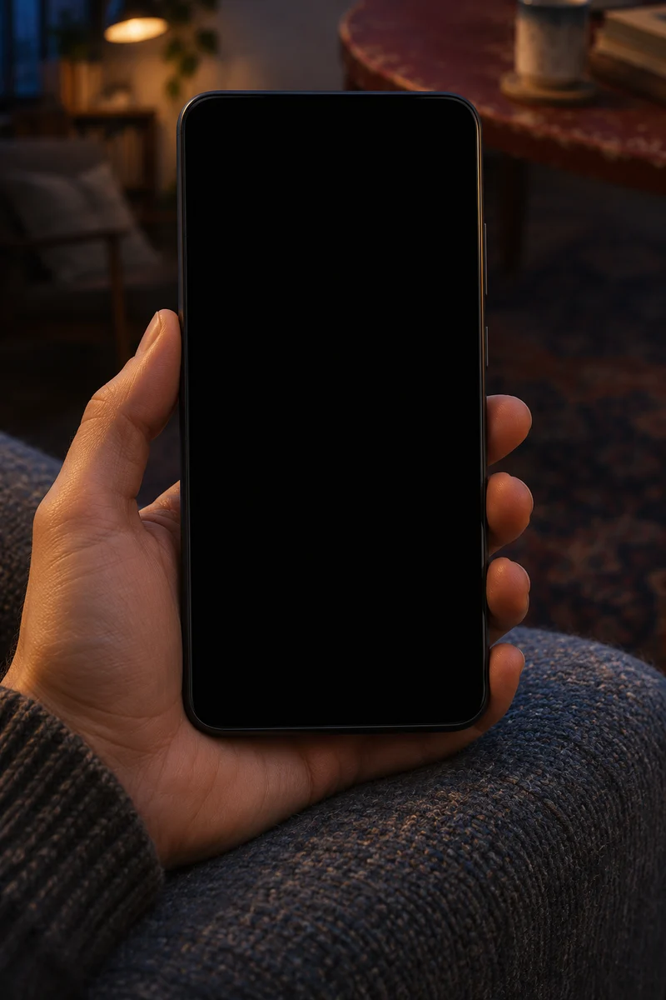
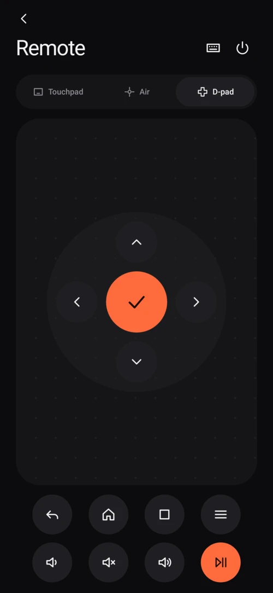

Your projector has a new remote.
Control your Android projector from the phone already in your hand.
Set up my projectorType the title on your phone. Then fix the picture.
The wall stays. The picture moves.
In the app, drag each corner to fit the picture to your wall.
Fine-tuning works on supported Hisilicon projectors.
Use the arrow keys to nudge this corner.


Connect your projector.
You’ll need your Android phone and the projector’s original remote.
Download Android appVersion 0.7.2 for Android 8 or later
1Install it on your phone
- Download the app on your Android phone.
- Open the downloaded .apk file.
- If prompted, tap Settings and allow installs from your browser. Go back and tap Install, then turn off that permission.
2Let your phone talk to the projector
On your projector, open Settings using its original remote.
I can’t find Android Settings
Some projectors hide the Android Settings screen. On the projector, install Project Settings, then open the new Settings icon. If your projector has a browser, download the APK there and open it from Downloads. You can also transfer it on a USB stick and open it from the projector’s file manager.
- In Settings, open System or Device Preferences, then About.
- Find Build number or Android TV OS build. Press OK on it seven times until you see the developer message.
- Go back to Developer options. Turn on USB debugging or ADB debugging. If you see ADB over network or Network debugging, turn it on too.
Use a home Wi-Fi network you trust. Switch off network debugging when you no longer need remote access.
3Find your projector
- Connect your phone and projector to the same Wi-Fi network.
- Open ProjectorConnect on your phone and tap Find my projector.
- Select your projector. If the projector shows a debugging prompt, choose Allow on its own remote.
- Open Remote, select D-pad, and tap a direction to try it.
If the picture stays dark.
Will my projector work?
ProjectorConnect needs an Android projector or TV box with network debugging. The remote, typing, apps, and files work independently of keystone. Auto keystone and live corner adjustment require compatible Hisilicon firmware.
Why can’t the app find my projector?
Check that both devices are on the same Wi-Fi and neither is on a guest network. Confirm network debugging is on, leave the projector awake, and look for an approval prompt on the big screen. In the app, try Enter IP address using the address shown in the projector’s Wi-Fi details. Some models need a one-time computer setup or use a different wireless pairing mode. See the projector setup notes for the computer method.
How do I straighten a tilted picture?
On a supported model, open Auto keystone from Home and follow the camera guide. You take four photos of the test pattern. Use Fine-tune keystone if you want to move individual corners yourself. If the projector’s own auto correction is on, switch it off from the projector’s settings first.
Can I use an iPhone?
The app runs on Android phones with Android 8 or later. You can read this guide on any device.